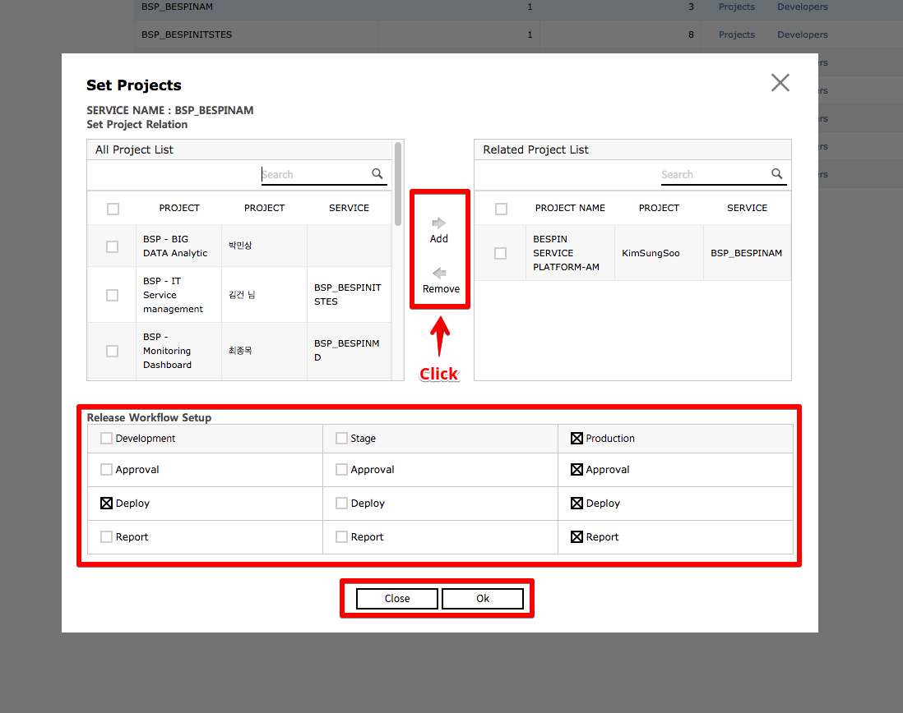
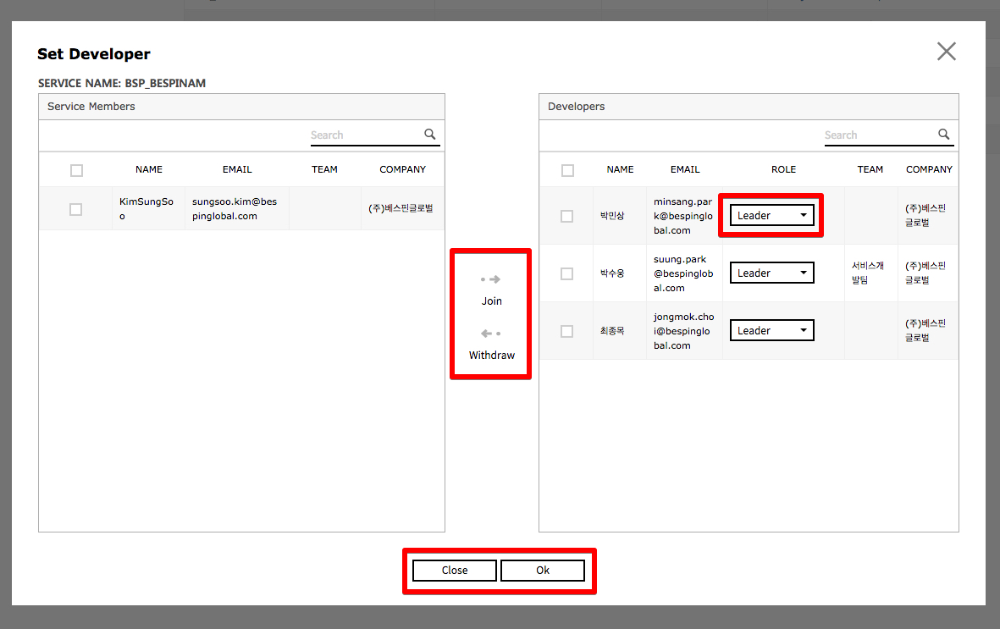
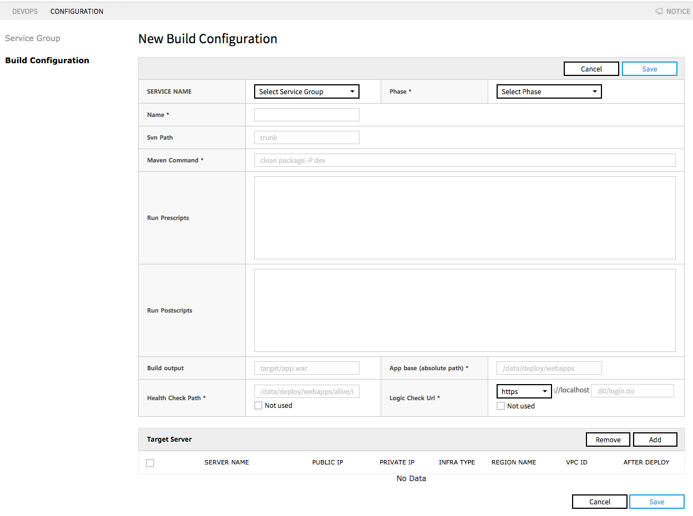
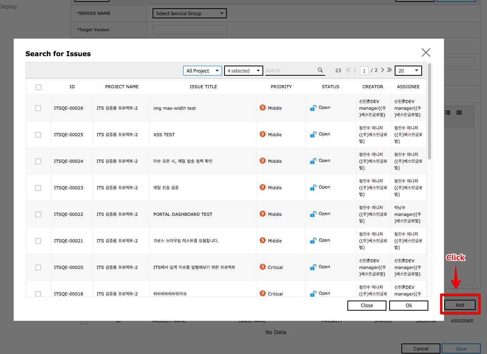
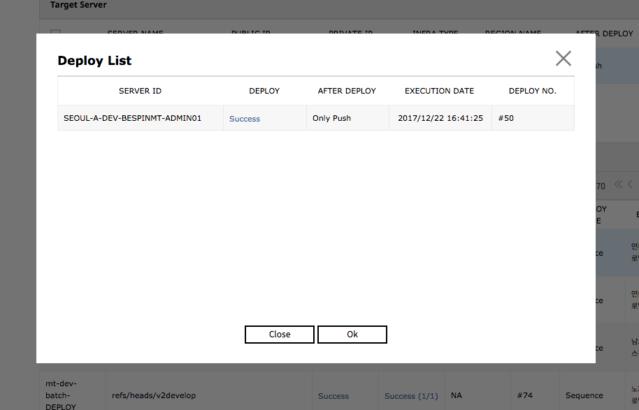
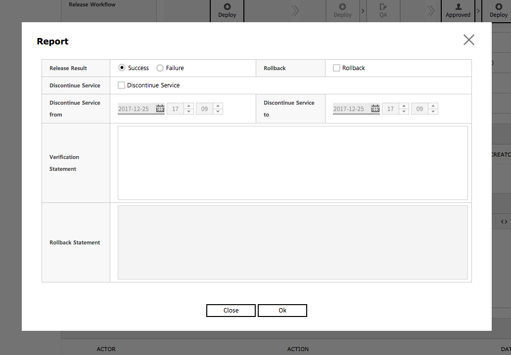

DevOps
You can manage development and release plan, Build & Deploy configuration, and End To End process.
Managing Development and Release Issue
Following is how to manage the release process for each service with DevOps service.
Presetting
1. Set the main project and person in charge for process & release for the service.
- The service group registered in Portal Service will be shown.

- You can link the project that manages the service group and set the workflow.
The workflow can be composed in three steps for each development phase (development, verification, operation): Approval, Deploy, and Report.- Project mapping
- A. Source Repository will be automatically created with a service group code when mapping.
- Workflow setting
- Approval: Link Approval Service to link the approval process before deploy.
- Deploy: Composed Build & Deploy procedures can be included.
- Report: Deploy report can be simply recorded

- Project mapping
- You can set the role of DevOps as a member of the previously linked project.
- Role
- Leader: Has all rights to Build & Deploy procedures
- B. Member: Has limited rights in regards to configuration menu usage and deploy that requires approval.
- 2. Once a role is granted, the permissions to Read/Write Repository & CI services are granted to the relevant ID, and an initial password is sent via e-mail.

- Role
2. Add Build configuration.
Add a new build configuration with “Create New".
- Set Service name / Phase / Project name / Repository Path(SVN) / Build Command(SVN) / Script(Shell) / Target Server / etc.
- Routung Check Settings
In case servers are diversified and support routing, this setting secures service continuity when deploying.
- Health Check Path
- Before build and deploy, you can change the file in the server’s Health Check Path, block routing by Load Balancer, and proceed with deploy.
- Logic Check URL
- After the deploy, you can check the server connection with the entered URL address, restore the files from Health Check Path, and normalize Routing.

- After the deploy, you can check the server connection with the entered URL address, restore the files from Health Check Path, and normalize Routing.
- Health Check Path
- Search and link the target server list manually entered via SR transfer.

3. Check the build configuration.

Development Planning
1. Go to the Dev Planning pane by clicking the “Create New” button.

2. Fill out the form for Dev Planning.
- Select the target service of Dev planning.
- Enter the release Target Version.
- Enter the development period, title, description, and watcher.

3. Link the development issues synced and managed with the project service.
- When committing to Source Repository, enter the issue key number of the project service on the first line on Commit Comment and its description after the second line. Then its content will be automatically registered as a comment to Issue, and you can trace the relevant content conversely.
- Register issues with Commit Log as issues related to Dev planning to check the changed source list on the bottom of the release planning.

Release planning
For established and verified development plans, you can write release planning with “Transfer to Release” button.
1. Write release planning
- Enter the release planning title, release period, and watcher.
- ii. For release description, please follow the job description form of the company.

2. Check the release list.

4. Processing Release
1. Check the details of release.
i. Here, the list of related issues linked to Dev planning is shown. You can check the changed source list according to the commit log registered on the relevant issue.
2. Proceed with the process for each development phase, according to the workflow preset on Configuration.
3. Click “Approval” to sync with Approval service and go to Approval pane.
Please refer to User Guide of Approval services for how to write approval.
4. Once approved, the status will change to “Approved”. Click the button to go to the approval details pane.
5. Deploy button is activated; click it to go to deploy execution pane.

Executing Build & Deploy
1. Select build configuration and Deploy Type, and proceed with deploy.
Click “Create New” to create Branch at Source Repository and deploy the relevant Branch.

2. You can check the build log in Execute Result.

3. Executing Deploy.
- Enter the service & development phase, build configuration, deploy source, sonar analysis, etc.
- You can analyze Sonarqube source with Run Sonar. Extra time to analyze and to execute may be required according to the Source amount.
- You can deploy concurrently or sequentially to the target server by setting the deploy type.

You can check the Deploy history
Reporting after deploy
1. Writing Report
- Once the deploy is complete, click “Report” button on the Release Plan Details to record the results.
- Record the success or failure of release / Rollback / discontinue service / duration of discontinued service / verification statement/ Rollback statement/ etc.

2. Closing release planning
Once the report is complete, complete the release by clicking “Close” button and go to Dev planning.

3. Closing Dev planning
- Check if all the related issues are reflected and handled properly, and close the Dev planning with the “Close” button in Dev planning pane.
- ii. Closing the Dev planning will change the status of all the related issues that are linked as “Closed”.

Operation scenario of integration of other services
If you link the services below, you can work more organically and efficiently in all the procedures from request gathering, development and testing, and to service release via DevOps.
- SR / Project: Request gathering
- Monitoring / Alarm: Monitoring of system performance
- DBQCS: Database quality management
- Approval: Approval process for each development phase
DevOps Constraints
- OS has been completely verified only in Ubuntu (Recommend Version 12/14)
- Only available in the service environments below
- Java(Recommend Version 1.7/1.8)
- Apache Tomcat (Recommend Version 7, 8) composition
- SSH access account must be created to deploy in ITS
- By executing deploy server initializing script, the server can be automatically composed in the following order:
- JDK installation : Java Application(Recommend Version 1.8)
- SSH access account configuration
- Apache Tomcat installation (Recommend Version 8)
- Other constraints
- Build Tool only supports Maven, and can be used after setting the Build Command
- SCM only supports : SVN, GIT, Bitbucket composition (refer to the details below)
- Repository establishment, role management, build, sonar analysis, and deploy can only be synced with SVN
- When Project Mapping to a service, Repository automatically is composed with a service code (SVN Only)
- When using GIT / Bitbucket, only the current Commit Log and Project Issue can be synced. It operates after setting DevOps API on the relevant server
- CI and QA constituents
- CI : Jenkins
- QA : SonarQube